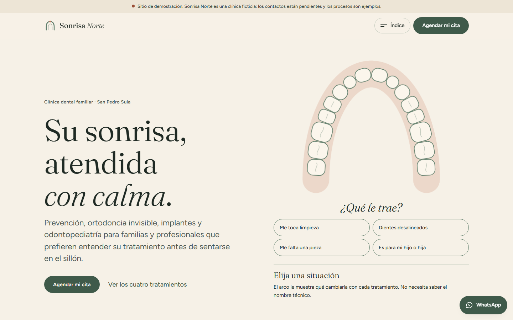
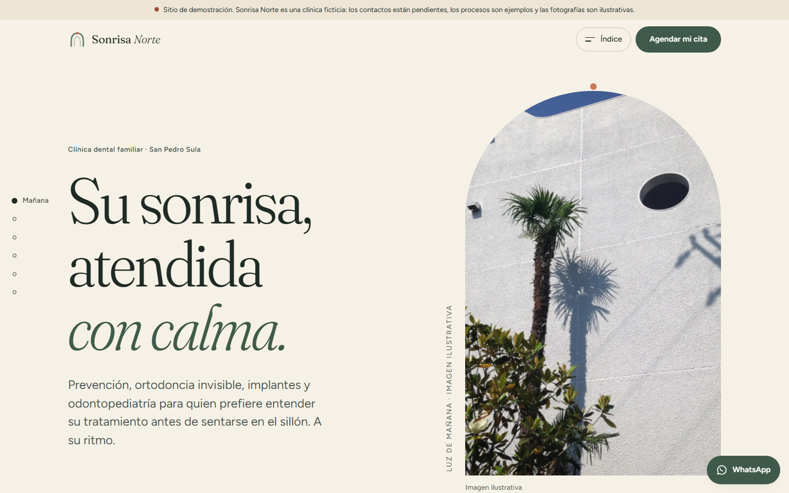
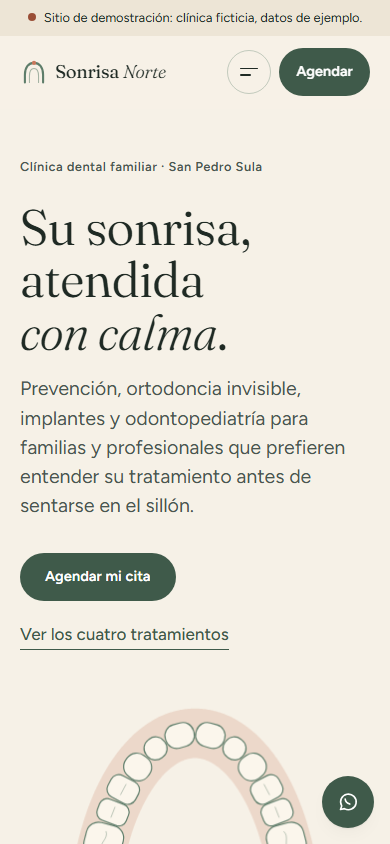
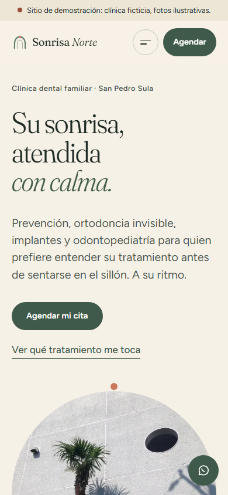
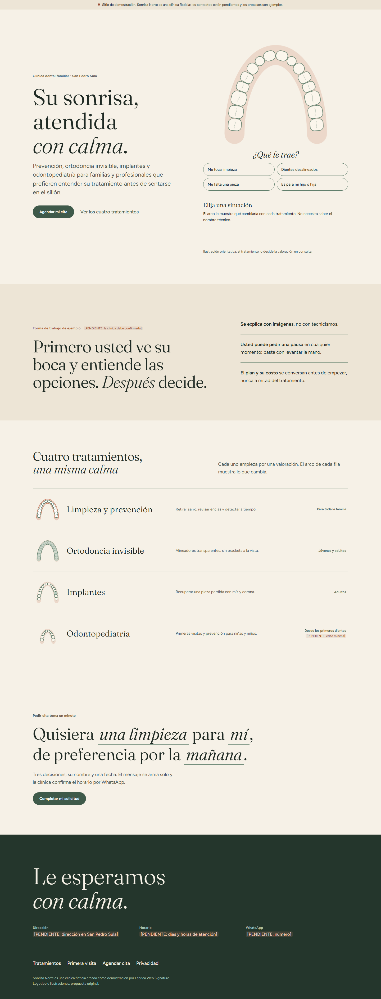
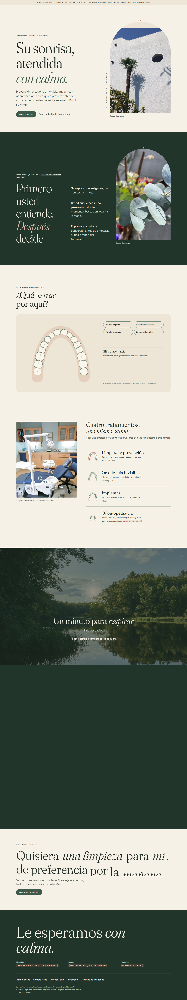

Sonrisa Norte · versión actual (motor 0.5) vs. piloto Signature 2.0 — capturas reales del navegador de pruebas
Primera pantalla · escritorio 1440 px

Antes
DespuésPrimera pantalla · móvil 390 px

Antes
DespuésPortada completa · escritorio

Antes
Después